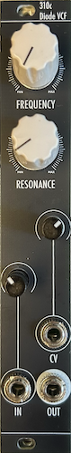

310c Diode Voltage Controlled Filter User Manual
This is the web version of the manual. Click here for the PDF version.
1 Introduction
The 310c Diode Voltage Controlled Filter is a basic VCF based on the diode ladder topology in a small 4hp format. It is a two-pole lowpass filter, meaning it has a -12 dB/oct frequency response.
2 Power
This module requires 4hp of free space in a rack. When installing, always turn off the power supply before plugging anything in. When plugging in the 10-16 pin ribbon power cable, ensure that the red stripe lines up with the RED LINE mark (see fig. 2.1) on the module and the marking that indicates -12v on the bus board.
This module is reverse polarity protected. This means that the module will not get heavily damaged if the power cable is plugged in backwards. However, a reversed power cable may still cause damage to the components in the module, as well as other modules connected to the same power supply.
 fig. 2.1 Power Header
fig. 2.1 Power Header
3 Front Panel Overview

fig. 3.1 Panel Overview
The 310c has a common and straightforward interface similar to many VCF designs. The cutoff FREQUENCY knob allows for sweeping across the full frequency range (20-20,000 Hz) , and the RESONANCE knob allows for control of resonance from completely zero up to self-oscillation (at about 2-3 o’clock) and overdriving self-oscillation. The resonance intensity can be adjusted, refer to Section 4.1.
The audio IN and CV inputs both accept standard Eurorack signal levels of up to 24Vpp, and can be attenuated using their respective onboard attenuators, indicated by the panel. The IN attenuator can be used to overdrive the input signal when fully open, which will decrease the effect of resonance and result in a soft-clipped output signal. CV is capable of tracking 1 V/oct for around 2-3 octaves, depending on the attenuator position. To achieve this, the attenuator should be set at about 1-3 o’clock, the exact position also depends on the FREQUENCY knob position.
Finally, the jack below the CV input is OUT, which is the output of the filter.
4 Additional Information
4.1 Resonance Intensity Adjustment
The intensity of the resonance can be adjusted via a trimmer potentiometer at the bottom PCB of the module. To adjust it, First turn the FREQUENCY knob to the central (12 o’clock) position and the RESONANCE knob to the maximum position, and plug a cable to OUT to monitor the output of the module. Next, remove the module from the rack and locate the resonance trimmer on the bottom PCB (see fig. 4.1). Using a small flathead screwdriver, adjust the frequency trimmer to your liking. The output of the resonance will be the resonance of the module with maximum resonance.
Warning: a. High resonance intensity can result in very high levels. Be careful to not damage hearing or speakers. b. Touching the PCB while adjusting the trimmer will cause instabilities in the module. While it won’t cause damage in the module, but will make adjustment more difficult. It is recommended to hold the panel or place the module upside-down on the rack (see fig 4.2) while adjusting. c. Do not allow contact from any metal with the PCB, as it may cause damage to the circuit.
4.2 Frequency Response
5 Patch Ideas
As this module is a very basic module without complicated functionality, creative uses for it are rather limited other than the standard VCF.
5.1 Filter Pinging
When triggers are patched into the filter while the RESONANCE is right before self-oscillation, the filter can be pinged, outputting a short decaying sine pulse. The frequency of the ping is dependent on the cutoff FREQUENCY, and the decay time can be slightly adjusted using the RESONANCE control.
CV can be used to obtain more interesting results, try patching a simple decaying envelope to it to obtain a pitch sweep, allowing the synthesis of kick drums or other percussive sounds. When an audio rate signal is patched into CV, more complex sounds can be obtained, reminiscent of Buchla Bongos and the likes.
Experiment with the combinations of IN and CV inputs, for example a decaying envelope into IN and a trigger into CV. Also, experiment with combining different signals in an external mixer to obtain complex modulation.
5.2 Sine VCO
When RESONANCE is pushed into self-oscillation, it outputs a sine wave with relatively low distortion . Therefore, the CV input can be used as a frequency modulation input of sorts, and when the CV attenuator is adjusted correctly, the CV input can be used for 1 V/oct tracking for a usable range (see Section 3). Thus, the filter can be used as a sine VCO.
Experiment with wavefolding the sine wave, using it to modulate other controls, overdriving the signal, as they will all result in interesting results. Additionally, driving the initial signal by cranking RESONANCE will produce an output of higher harmonic content, try filtering the driven output for other results. Note that the signal is hard-clipped, and may produce noisy and/or loud results.
6 Technical Specifications
6.1 Dimensions & Power
| Width | Depth | +12v Current | -12v Current |
|---|---|---|---|
| 8hp | ~35mm max. |
6.2 Inputs & Outputs
| Inputs | Additional Info | Outputs | Additional Info |
|---|---|---|---|
| IN | ±12V max. | OUT | ~20Vpp max. |
| CV | ±12V max. |